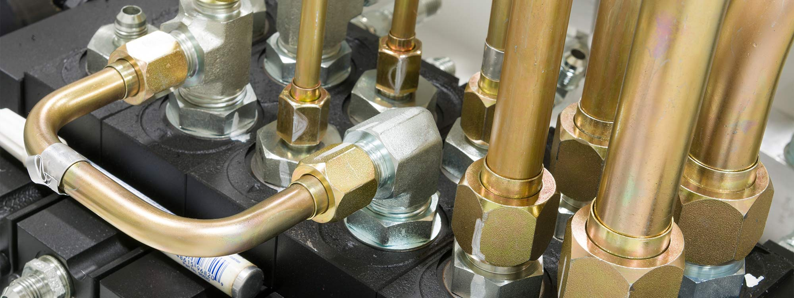
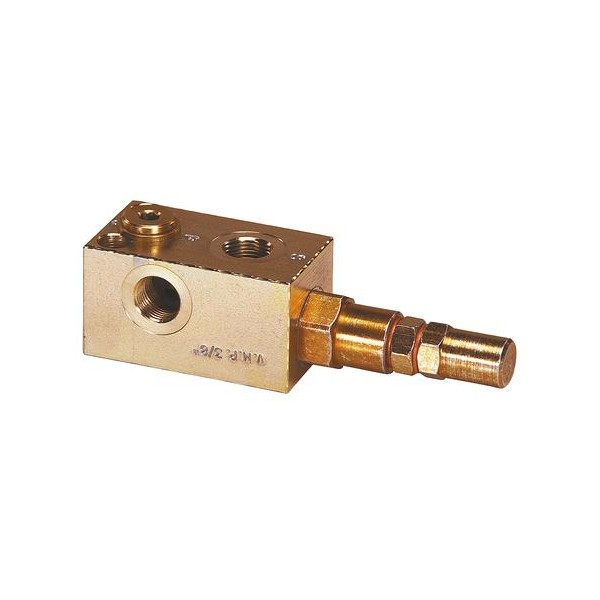

Aukšto slėgio žarnos ir komponentai
Hidraulika

Danijos–Lietuvos kapitalo įmonė • Nuo 2000 m.
Patikimi itališki hidraulikos ir mechaninio perdavimo komponentai žemės ūkio, miško bei pramoninei technikai. Kardaniniai velenai, teleskopiniai hidrocilindrai, siurbliai ir aukšto slėgio žarnos tiesiai iš mūsų sandėlio.
Produktų katalogas
Pasinaudokite paieškos laukeliu viršuje (pvz., įveskite „cilindras“, „kardanas“, „siurblys“ arba „manometras“) arba pasirinkite kategoriją.



Pabandykite įvesti kitą raktažodį (pvz., „kardanas“, „cilindras“, „žarna“, „siurblys“) arba susisiekite su mumis tiesiogiai.
Mūsų elektroninėje parduotuvėje rasite tūkstančius atsarginių dalių, hidraulikos mazgų, kardanų ir ūkio įrangos su aiškiomis kainomis ir greitu pristatymu visoje Lietuvoje.
Kardaniniai velenai, kryžmės, šakutės, movos ir apsauginiai gaubtai.
Hidrocilindrai, skirstytuvai, siurbliai, žarnos, filtrai ir jungtys.
Tvirtinimo kaiščiai, traukės, guoliai, grandinės ir žemės ūkio mazgai.
Jungtys, lizdai, kabeliai, jungikliai ir technikos elektros komponentai.
Gyvulininkystės ūkių įranga, girdyklos ir kasdienės priežiūros priemonės.
Tepalo švirkštai, tepimo taškai, žarnelės ir centrinio tepimo detalės.
Darbiniai LED žibintai, švyturėliai ir gabaritinis apšvietimas technikai.
Greitas pristatymas ir sąskaitos faktūros įmonėms bei ūkiams.
Danijos–Lietuvos kapitalo įmonė, dirbanti nuo 2000 metų
Hidraulinės ir mechaninės perdavimo sistemos • Itališki komponentai
Nuo 2000 metų tiekiame aukštos kokybės itališkus hidraulikos ir mechaninio perdavimo komponentus Lietuvos gamintojams, servisams bei ūkininkams. Mūsų stiprybė – tikslus techninis parinkimas, patikrinti Europos gamintojai ir greitas reagavimas technikos prastovų metu.
Partneriai ir gamintojai
Kainos ir komplektavimas
Tikslias kainas ir likučius realiu laiku rasite el. parduotuvėje elturgus.lt, o didmeniniams projektams pateikiame individualų pasiūlymą.
| Pozicija | Techninė specifikacija | Orientacinė kaina | Veiksmas |
|---|---|---|---|
| Kardaninis velenas Eurocardan (4 serija) | Ilgis 800–1200 mm, 1 3/8" Z6, su apsauga | nuo 125,00 € | |
| Teleskopinis hidrocilindras (4 pakopų) | Eiga 1200 mm, darbinis slėgis 200 bar, 8–10 t | nuo 295,00 € | |
| Krumpliaratinis siurblys GR2 (16 cm³/aps.) | Aliuminio korpusas, iki 250 bar, itališkas | nuo 89,00 € | |
| Aukšto slėgio žarna 2SN DN12 su antgaliais | Dviejų metalo pynių, 275 bar, komplektuojama pagal ilgį | nuo 14,50 € | |
| Glicerininis manometras WIKA (0–250 bar) | Ø 63 mm, nerūdijančio plieno korpusas, G1/4" | nuo 18,90 € |
* Nurodytos orientacinės kainos be PVM. Dėl tikslių kainų, nuolaidų kiekiams ir nestandartinių mazgų kreipkitės žemiau esančia forma arba el. paštu info@scantechnika.lt.
Kontaktai ir konsultacijos
Konsultuojame hidraulikos, kardaninių velenų ir technikos dalių parinkimo klausimais.
Parašykite, kokių komponentų ieškote – parinksime tinkamiausią sprendimą ir atsiųsime kainos pasiūlymą.